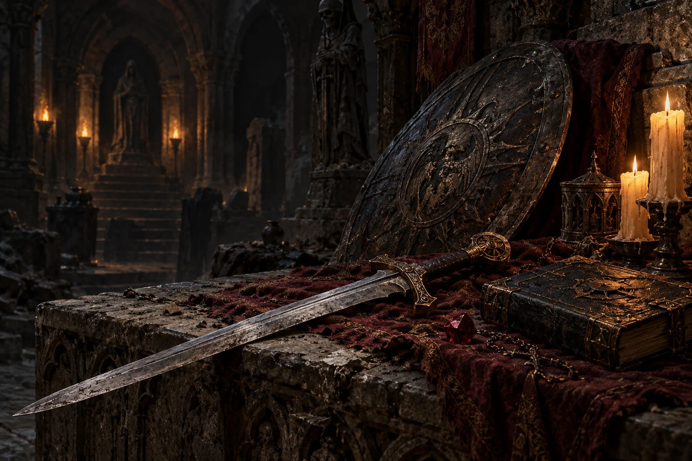
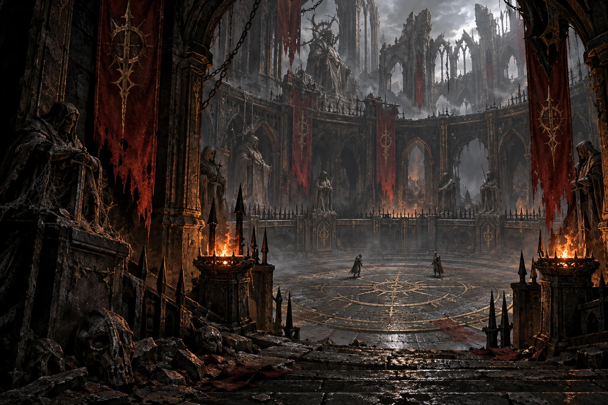

READY TO PLAY
A escuridão
nos reúne.
Reencontre Tristram. Reúna seu grupo.
Uma nova jornada começa no mesmo lugar.
READY TO PLAY
Reencontre Tristram. Reúna seu grupo.
Uma nova jornada começa no mesmo lugar.
Retorne a Tristram em uma aventura ampliada: 29 caminhos de personagem, milhares de equipamentos, magias, talentos e desafios. Reúna até quatro jogadores na central online e continue a jornada no cliente Windows de Returns from Darkness HD.
ENCONTRE SEU GRUPO
Crie uma sala ou junte-se a outros aventureiros.
Conecte sua conta para ver as salas e reunir seu grupo.
AO REDOR DA FOGUEIRA
Converse, encontre um grupo e prepare a próxima jornada.
O SEU PORTAL PARA TRISTRAM
Returns from Darkness HD · Cliente da comunidade
READY TO PLAY
Windows · v0.3.6
Baixe o cliente e escolha sua sala. As versões são atualizadas automaticamente ao iniciar uma nova partida.

Encontre companheiros na central e atravesse os portões em partidas cooperativas para até quatro jogadores.

Seis arquétipos e 29 classes e especializações. Combine atributos, talentos e características para desenvolver seu estilo de combate.
Cliente em testes
Mais de 2.500 bases de equipamentos, afixos, raridades, gemas e melhorias. Organize seu acervo no baú ampliado e experimente novas combinações.
Cliente em testesA central usa serviços na nuvem; a partida roda nos clientes e exige que o criador permaneça conectado. Personagens são salvos neste computador, com gravação automática e cópia de recuperação. Uma nova sala cria um novo mundo. Artes HD completas, migração de anfitrião e ranking PvP ainda não estão concluídos.
Encontrar a comunidade ↗